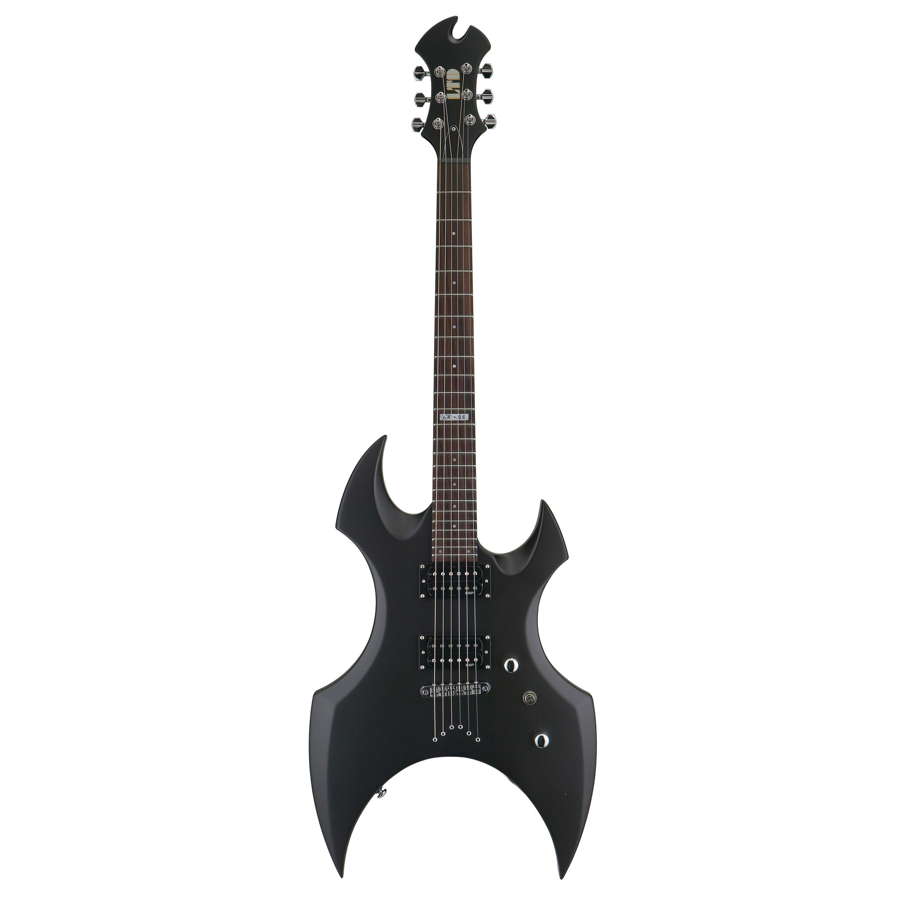

Электрогитара
Электрогитара - символ энергии, мощи и рока. Родившись в Америке, этот инструмент изменил ландшафт мировой музыки, добавив в нее новые звуковые грани и возможности самовыражения. Электрогитара стала ключевым элементом современной популярной музыки, переплетаясь с жанрами от рока и блюза до металла и поп-музыки.
История электрогитары связана с творчеством многих выдающихся музыкантов, которые, используя этот инструмент, создавали новые звуковые ландшафты и определяли характер музыкальных движений. Рок-н-ролл, возникший в середине 20-го века, стал золотым веком для электрогитары, выражая дух молодежной бунтарской энергии и взлетающей популярной культуры.
От легендарных соло Джими Хендрикса до гипнотизирующих мелодий Пинк Флойд, электрогитара стала ярким и выразительным знаком в музыке. Влияние этого инструмента распространяется на все жанры, давая музыкантам возможность творчески выражаться и создавать мелодии, которые остаются в памяти слушателей.
Современные технологии и инновации в дизайне электрогитары открывают новые горизонты для музыкантов, предоставляя им широкий спектр звуковых возможностей. Независимо от стиля или жанра, электрогитара продолжает быть неотъемлемой частью музыкальной эволюции, вдохновляя новые поколения артистов и принося радость слушателям по всему миру.